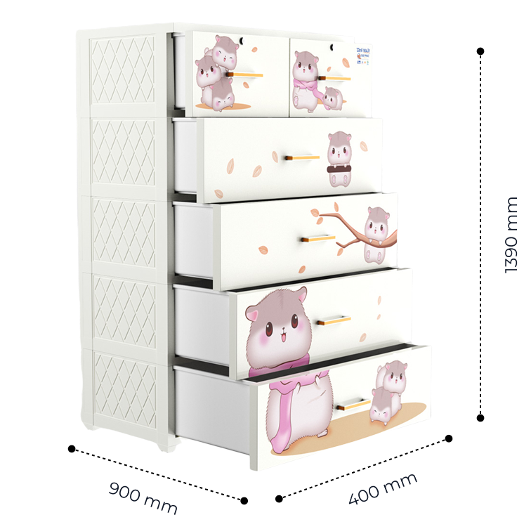

<section class="section info">
  <div class="info_wrap">
    <div class="info_head">
      <h4 class="title">Thông tin sản phẩm</h4>
      <p class="text">
        Tủ nhựa DELI MAX là sản phẩm tủ nhựa cao cấp mới ra mắt của Qui Phúc. Tủ
        DELI MAX có kích thước lớn, siêu to, siêu chắc để bạn thoải mái chứa
        đựng quần áo, đồ đạc gia đình...
      </p>
    </div>
    <div class="info_content">
      <div class="info_content-thumb">
        
      </div>
      <div class="info_content-tech">
        <h4 class="title">Thông số kỹ thuật</h4>
        <table>
          <tbody>
            <tr>
              <td class="bg-white rtl">Chất liệu</td>
              <td class="rtr">100% nhựa PP và nhựa ABS chính phẩm</td>
            </tr>
            <tr>
              <td class="bg-white">Kích thước</td>
              <td>900 x 490 x 1390 mm</td>
            </tr>
            <tr>
              <td class="bg-white">Khối lượng</td>
              <td>28.7Kg</td>
            </tr>
            <tr>
              <td class="bg-white">Khả năng chịu tải:</td>
              <td>
                + Khối lượng tải trên 1 hộc tủ/ngăn tủ: 10Kg<br />
                + Khối lượng tải trên nắp tủ: 20Kg
              </td>
            </tr>
            <tr>
              <td class="bg-white">Màu sắc</td>
              <td>Dương/Trắng sữa/Hồng</td>
            </tr>
            <tr>
              <td class="bg-white rbl">Hoạ tiết</td>
              <td class="rbr">Én/Hươu/Nhà gỗ/Ánh dương </td>
            </tr>
          </tbody>
        </table>
      </div>
    </div>
  </div>
</section>
